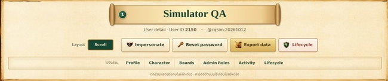
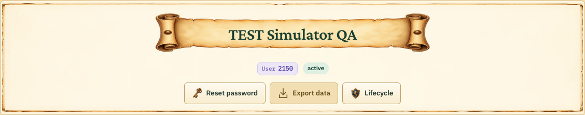
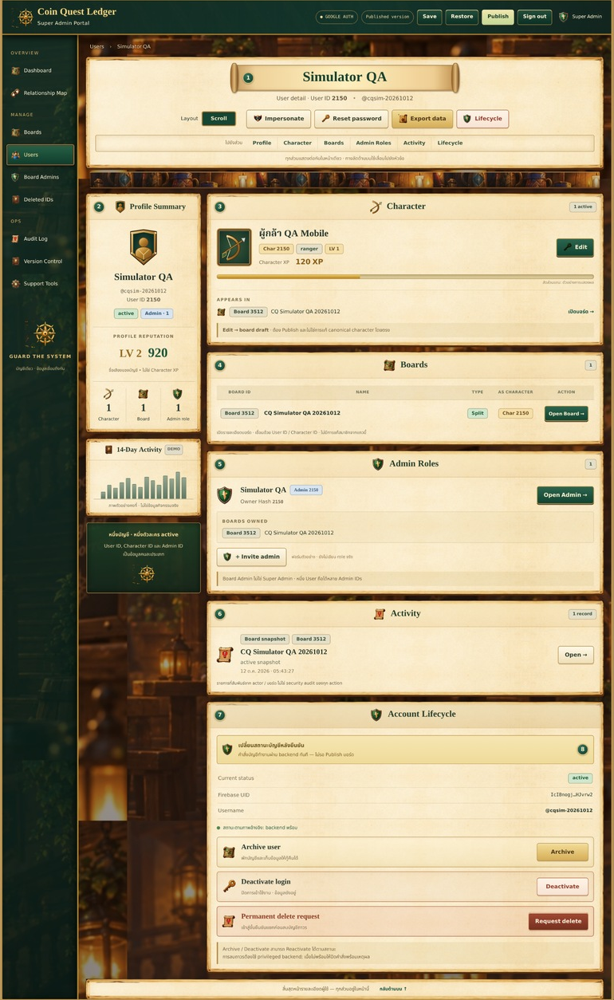
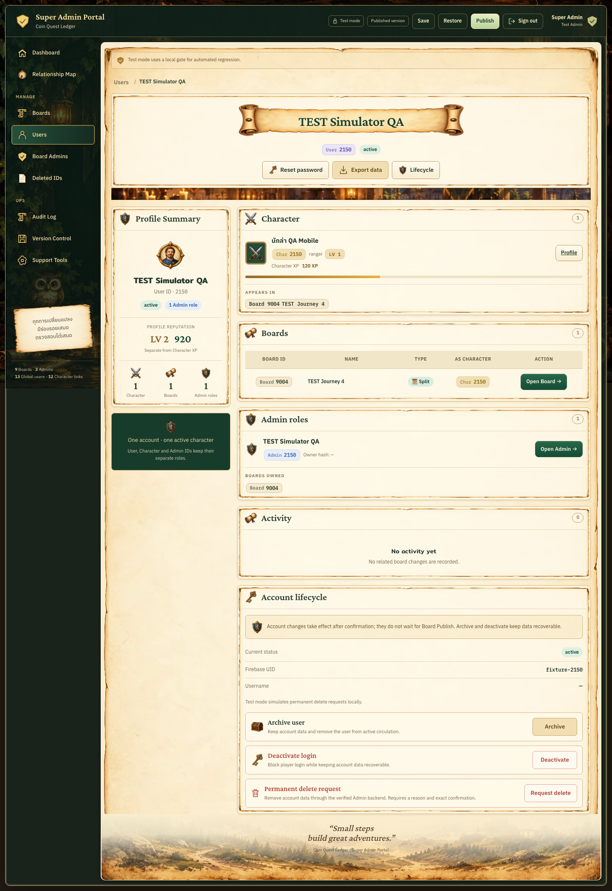
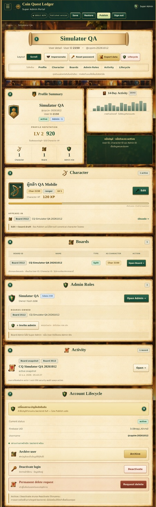
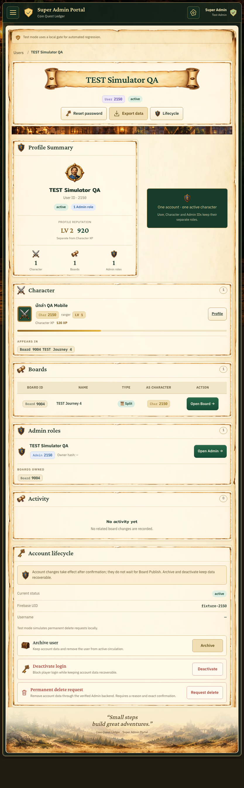
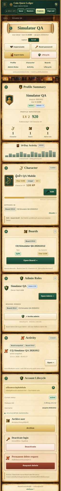
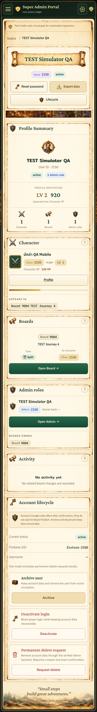

2026-10-14 · Local isolated TEST user 2150. Board Info controls the shared artwork and parchment. The follow-up correction centers the title, identity and actions in one paper panel. Reference crops preserve aspect ratio; device CSS scale is inferred. Unsupported actions, tabs/layout toggles and the demo chart are intentionally absent.







